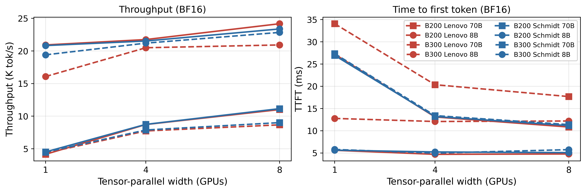
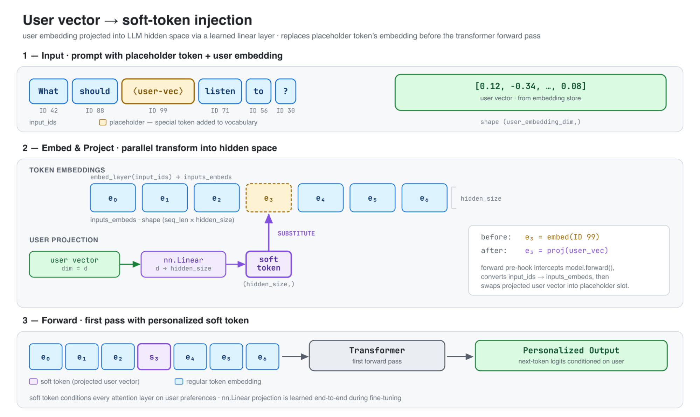
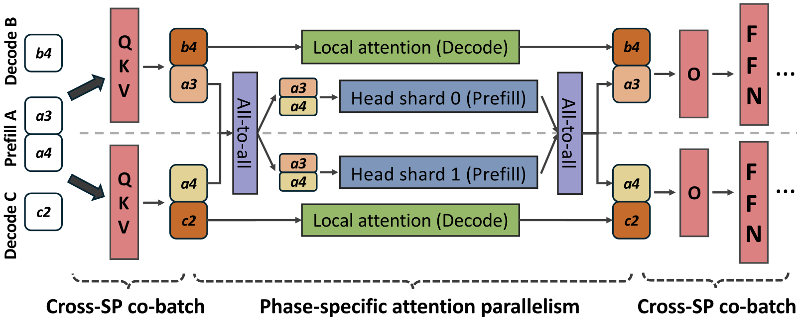

目录 · 8 节
1它到底在解决什么问题？2怎么测的3视觉负载：B300 慢在哪里？4为什么是这些模型慢？5大模型推理：相当一部分差距来自 vLLM 版本，而不是芯片6我认为它的局限7一个推荐/搜索团队可以怎么试8结论与评价这篇论文在真实的科研和 AI 负载上实测了 B200 和它的升级款 B300，用每张卡的功耗来诊断新卡为什么在一些任务上反而更慢，最后给出一张按负载选卡的清单。B300 显存更大，但不是在所有任务上都更快：芝加哥大学研究计算中心在两个八卡集群上实测，卷积网络推理时 B300 的吞吐最低只有 B200 的 1/5.6。功耗能说明原因：在这些任务上 B300 只用到功耗上限的 36% 到 53%，卡并没有满负荷计算，时间耗在每个 kernel 自身的开销上。论文给出两个可能的来源：CPU 端启动 kernel 的开销，或 B300 上的卷积 kernel 还不够成熟；在 B300 赢的 ViT-Large 上，两张卡都接近满功耗。另外，两台芯片完全相同的 B300 节点，只因 vLLM 版本不同，首 token 延迟就差 2.1 倍。要采购或评估新一代 GPU 的团队值得读。买新卡前要用自己的负载和软件版本实测。
它到底在解决什么问题？
这篇论文要回答的是：在一个研究计算中心真实会跑的负载上，B300 到底比 B200 快不快，慢的话慢在哪里；它的核心做法是把每张卡的功耗当成诊断工具，而不只是算能效。只看规格表（B300 每张卡 288 GB HBM3e，B200 是 192 GB，功耗上限从 1000 W 提到 1100 W），很容易把 B300 当成 B200 的直接替代品。
先用一个示意场景说明为什么只看吞吐不够。一个团队在新卡上跑自己的模型，发现吞吐只有旧卡的三分之一：
| 可能的原因（示意） | 卡在忙什么 | 功耗会怎样 |
|---|---|---|
| 算力或显存带宽不够 | 一直在算，只是算得慢 | 接近功耗上限 |
| 数据从主机送不过来 | 等输入 | 很低 |
| 每个 kernel 启动或实现得不好 | 两个 kernel 之间空转 | 很低 |
三种情况下吞吐数字相同，功耗却不同：一张卡“很努力但还是输”，功耗会顶满；一张卡“大部分时间在等”，功耗只用到一小部分。所以功耗能把“算力不够”和“没在算”分开。
怎么测的
测试在两个独立管理的八卡集群上做，一个来自 Lenovo，一个来自 Schmidt Sciences，每个集群都有 B200 和 B300 节点；A40、A100、H100、H200 作参照，来自该中心上一代的集群。两个集群用同样的 CUDA 13.2、PyTorch 2.9.0 和 cuDNN 9.15。负载分三类：
| 负载 | 内容 | 重复次数 |
|---|---|---|
| 视觉 | ResNet-50、EfficientNet-B4、ViT-Large、ConvNeXt-Base 的推理，以及其中 ResNet-50 和 ViT-Large 的多卡训练 | 单次计时，抽查波动 2% 到 4% |
| 大模型推理 | vLLM 跑 Llama-3-8B 和 70B，150 条长短不一的 prompt，最多生成 256 个 token | 单次计时 |
| 科学计算 | 3D 视觉 Transformer 天气模型 Pangu-Weather 的训练和六个科学计算软件（分子动力学、量子化学等） | 五次取中位数 |
两个设计让诊断成立。第一，视觉测试的输入张量一次性放进显存、反复使用，所以计时区间里根本没有从磁盘读图、解码、拷到 GPU 这些步骤，“数据送不过来”这个解释被直接排除。第二，功耗用 NVIDIA 的显卡管理接口（NVML）每秒采样 20 次，取计时区间的平均值，再换算成占功耗上限的比例。每个测试在两个集群上各跑一遍：两边芯片型号和 CUDA、PyTorch、cuDNN 版本相同。结果一致，只说明限制不随主机变化，它可能来自芯片，也可能来自两边共有的软件（比如 cuDNN）；结果对不上时，再去查两边不同的配置，大模型推理里查出来的是 vLLM 版本。 Hoot 说

论文的诊断靠两个设计：视觉输入一次放进显存反复用，计时里没有读盘、解码、拷贝，所以“数据送不过来”先被排除；再在两个独立管理的集群上各跑一遍。两边芯片型号和 CUDA、PyTorch、cuDNN 版本相同，所以结果一致时，能排除的只有两边不同的东西；结果对不上时，答案就在两边不同的配置里。 出处: 论文 §3 测量方法
视觉负载：B300 慢在哪里？
八卡 BF16 推理时，B300 在 ResNet-50 上慢 3.1 倍（吞吐只有 B200 的 0.32），在 ConvNeXt-Base 上慢 5.6 倍，在 EfficientNet-B4 上和 B200 接近，只有 ViT-Large 反过来快 21%。训练重复了同样的规律，说明这不是推理代码路径的偶然现象。
把功耗放进来，规律就很清楚了（论文表 I，Lenovo 集群，八卡 BF16，每个模型取吞吐最高的配置）：
| 模型 | B200 功耗占上限 | B300 功耗占上限 | B300 吞吐 / B200 吞吐 |
|---|---|---|---|
| ViT-Large 推理 | 97% | 95% | 1.21 |
| EfficientNet-B4 推理 | 65% | 57% | 0.85 |
| ResNet-50 推理 | 80% | 53% | 0.32 |
| ConvNeXt-Base 推理 | 76% | 36% | 0.18 |
| ViT-Large 训练 | 93% | 92% | 1.16 |
| ResNet-50 训练 | 58% | 46% | 0.34 |
大体上，B300 用到的功耗越少，相对 B200 就越慢；唯一的小幅倒挂是 ResNet-50 训练和推理两个点（功耗 46% 对 53%，相对吞吐 0.34 对 0.32），差距和测量波动相当。卡没有在拼命算，时间耗在每个 kernel 自身的开销上。低功耗本身分不清是 kernel 之间在等，还是单个 kernel 没把硬件用满，下面两条观察和下一节的两个候选原因就是在缩小这个范围。

还有两条观察限定了可能的解释。第一，从小 batch 到大 batch，B300 的劣势一直存在，如果问题出在每个 batch 的固定开销上，batch 变大时差距应该缩小。第二，两台 B300 节点在每个视觉模型上的结果相差不到 0.1%，两台 B200 节点却最多差 14%。B300 的吞吐在两套主机配置上几乎不变，说明限制它的东西不在两台主机不同的部分；两台机器共有的 CPU 发起 kernel 的路径仍不能排除。
为什么是这些模型慢？
剩下两个候选原因。一是 CPU 发起 kernel 的开销：ResNet-50 和 ConvNeXt-Base 每一步要发起大量小卷积 kernel，ViT-Large 主要是少数几个大矩阵乘。二是 cuDNN 里给 B300 这一代芯片（sm_103）写的卷积 kernel 还不成熟。论文更倾向于 cuDNN 的 sm_103 卷积 kernel 不成熟这个解释，理由是测试时没开 cuDNN 的自动调优，卷积算法是按 cuDNN 内置的启发式规则选的，而这类规则通常是新架构上最后才调优的部分。但作者明确说数据分不开两者，并点名了能分开的实验：把前向过程录成 CUDA graph，几乎能消掉每次发起 kernel 的开销，劣势还在就排除启动开销，消失就证实它。
论文最有价值的推论是：决定 B300 快慢的是 kernel 粒度，而不是模型类别。3D 视觉 Transformer 是 Transformer，在 B300 上训练却慢了约 8 倍；一个和视觉无关的扩散模型训练（Gen-COMPAS）在 B300 上比 A100 还慢 3.2 倍。它们和 ResNet-50 的共同点不是网络类型，而是每一步都发起很多小 kernel，没有一个操作大到能把卡跑满。EfficientNet-B4 是卷积网络，却落在中间（吞吐 0.85、功耗 57%），因为它的结构发起的 kernel 更少、更大。决定快慢的是 kernel 粒度，不是模型属于哪一类。
大模型推理：相当一部分差距来自 vLLM 版本，而不是芯片
八卡跑 Llama-3-8B，B200 在 Lenovo 集群上比 B300 快 16%（每秒 24.2K 对 20.9K 个 token）；跑 70B，B200 快 24% 到 27%。
最能说明问题的是两台 B300 的对比。两台芯片完全一样，但 Lenovo 那台用的是 vLLM 的开发版，Schmidt 那台用的是正式发布版（两台的主机 CPU 线程数也不同，论文把差异归给 vLLM 版本）。结果 Lenovo 那台在 8B 上首 token 延迟高 2.1 倍，在 70B 上高 1.6 倍。论文还报告了 FP8 在两边收益不同，但正文里这组百分比的口径前后不一致，这里不引用。论文把延迟差归因于开发版给 sm_103 编译 CUDA graph 的优化不够，但没有报告固定主机、只切换 vLLM 版本的对照，这个归因还没有被单独验证。如果只测了 Lenovo 一台，就会把这些差距当成芯片本身的毛病。

另一个容易被当成硬件问题的软件现象：B200 跑 70B 时，FP16 比 BF16 慢，差距在单卡时没有，八卡时扩大到 28%。BF16 和 FP16 在这代芯片上张量核心吞吐相同，所以论文判断是 FP16 路径在张量并行下选了较差的通信或 attention 实现。
科学计算这边只简单提一句：B300 的双精度算力很弱，量子化学软件 Quantum ESPRESSO 的主要 kernel 在 B300 上比 B200 慢 16 倍，单精度的分子动力学软件 GROMACS 上两者相差不到 1%。
我认为它的局限
第一，核心诊断建立在单次测量上，作者自己也承认这一点。表 I 来自单次运行，作者抽查的波动是 2% 到 4%。主要结论的差距是 3 倍到 16 倍，不受这点波动影响；但精度对比里不到 4% 的差别，作者自己也不解读。
第二，原因没有最终确认。启动开销和 cuDNN kernel 不成熟这两个解释，论文没有做那个能区分它们的 CUDA graph 实验。对采购方来说区别很大：如果是 cuDNN 的问题，软件更新后差距可能消失；如果是启动开销，就要改模型的执行方式。
第三，kernel 粒度是按模型结构判断的。哪个模型发起的 kernel 多而小，论文是从网络结构推出来的，没有用 nsys 时间线实测 kernel 时长和间隙，作者也把这列为能直接定案的实验。
第四，功耗只在一张卡上采样。每台八卡机只读了第 0 号卡的功耗，其他七张卡被假设差不多，论文没有直接验证。视觉测试也刻意排除了真实的数据输入流程，线上从存储读图的部署可能还会遇到别的瓶颈。
一个推荐/搜索团队可以怎么试
推荐和搜索的排序模型往往由很多小算子组成，我认为它们更可能落在“kernel 很碎”的那一类，所以论文的方法直接可用：
- 在候选新卡上跑自己的训练或推理一步，同时记录吞吐和每张卡的功耗占上限的比例。吞吐低、功耗也低，说明卡在空转。
- 用 CUDA graph 把前向录下来再测一次。录图前后跑的是同一串 kernel，所以劣势消失就说明问题在发起 kernel 的开销；这时再试合并算子这类减少 kernel 数量的办法。
- 固定并记录整套软件版本（驱动、CUDA、cuDNN、vLLM 或推理引擎），最好在两套独立环境上各测一遍，避免把软件版本差当成硬件差。
- 按论文表 II 的思路（每类负载单独给出“选 B200”或“选 B300”和对应的吞吐比），给自己的每类负载单独下结论，不要用一个平均数决定整批采购。
结论与评价
最关键的启发是：判断新卡快不快，要同时看吞吐和功耗，并且把软件版本当成和芯片同等重要的变量。
| 维度 | 评价 |
|---|---|
| 问题重要性 | 中高。B300 是当下的采购选项，规格表看不出它在哪些负载上会变慢 |
| 方法创新性 | 中。没有新算法，新意在用功耗区分“忙着输”和“闲着输”，以及用两套集群分开软件和芯片的影响 |
| 实验证据 | 中。覆盖视觉、大模型和科学计算，两套集群互相印证；但视觉和大模型是单次运行，原因没有用 CUDA graph 实验最终确认 |
| 工程成本 | 低。功耗用 NVML 就能读，测试脚本和原始数据都已公开 |
| 是否值得尝试 | 值得。评估新卡时加一列功耗几乎不花成本，能很快看出卡是不是在满负荷工作，再配合 CUDA graph 这类对照实验和固定的软件版本缩小原因 |
读完这篇，你觉得
夜读鸮记下了，谢谢你的反馈。
点一下即可，无需登录；再点一次撤回。只统计匿名次数，不记录你是谁。
相关论文RELATED
 Infra · 2026-11-03HiState: Hierarchical Prefix Cache Management for Hybrid LLM Serving in Agentic Workloads混合模型的循环层会把整段前缀压成一个固定大小的快照，没法截短回更早的位置。所以 KV 明明还在，只要匹配位置的快照没存过或已被淘汰，就要从更早的快照甚至从头重算一大段。HiState 抓住一个不对称：一次缓存命中要读所有匹配的 KV，却只读一个快照，而且快照大小和上下文长度无关。所以它把大量历史快照放到 SSD，把内存留给 KV，并把快照和 KV 放进同一个淘汰队列。队列里每一项的分数是最近访问时间，加上删掉它后要多重算的 token 数除以它能腾出的空间，分数最低的先删。在两份公开的编程 agent 请求记录上，p99 TTFT 相对基于 vLLM 的 Marconi 最多加速 5.73 倍。快照多存不占快内存，每次命中也只从慢存储读一个。
Infra · 2026-11-03HiState: Hierarchical Prefix Cache Management for Hybrid LLM Serving in Agentic Workloads混合模型的循环层会把整段前缀压成一个固定大小的快照，没法截短回更早的位置。所以 KV 明明还在，只要匹配位置的快照没存过或已被淘汰，就要从更早的快照甚至从头重算一大段。HiState 抓住一个不对称：一次缓存命中要读所有匹配的 KV，却只读一个快照，而且快照大小和上下文长度无关。所以它把大量历史快照放到 SSD，把内存留给 KV，并把快照和 KV 放进同一个淘汰队列。队列里每一项的分数是最近访问时间，加上删掉它后要多重算的 token 数除以它能腾出的空间，分数最低的先删。在两份公开的编程 agent 请求记录上，p99 TTFT 相对基于 vLLM 的 Marconi 最多加速 5.73 倍。快照多存不占快内存，每次命中也只从慢存储读一个。
Infra · 2026-10-26Advancing Generative Recommendation Inference: our collaboration with NVIDIA on TensorRT LLMSpotify 和 NVIDIA 把生成式播客推荐原本分散在两套推理引擎上的工作统一到 TensorRT-LLM 后，在 Qwen3-1.7B 上，束搜索的成本最多降低 54%，打分的成本最多降低 7%。Spotify 用 Semantic ID 做推荐，线上一个请求要用到三种推理：用束搜索生成候选、给一批现成候选逐个打分、把用户向量作为一个额外的 token 塞进 prompt。原来这三件事分散在 vLLM 和 SGLang 两套推理引擎里，vLLM 的束搜索又跑不满 GPU，只好退而用低档显卡。两家把缺的功能补进了 TensorRT-LLM，三件事统一到一个引擎里跑。
Infra · 2026-11-02ConfluxServe: Reconciling Resource Utilization and Parallelism Efficiency across Prefill and Decode in LLM Serving大模型服务里，prefill 和 decode 放在一起跑能互补资源，前者吃算力，后者吃显存带宽，但两者想要的并行方式不一样。长 prompt 的 prefill 要铺到更多卡上才能按时出首 token，decode 几张卡就够。ConfluxServe 按算子分开处理。线性层里，两阶段的 token 拼成一个批，用同一份权重切分一起算。到注意力层再分开，decode 留在本组卡上算，prefill 通过两次 All-to-All 分到更多卡上并行算，两条路径同时跑，算完再拼回一个批。在线上负载上，它在延迟约束内能承受的请求量比最强基线高 1.26 到 1.62 倍。
讨论
欢迎补充实验细节、复现经验或不同看法。需 GitHub 登录。
正在加载讨论…